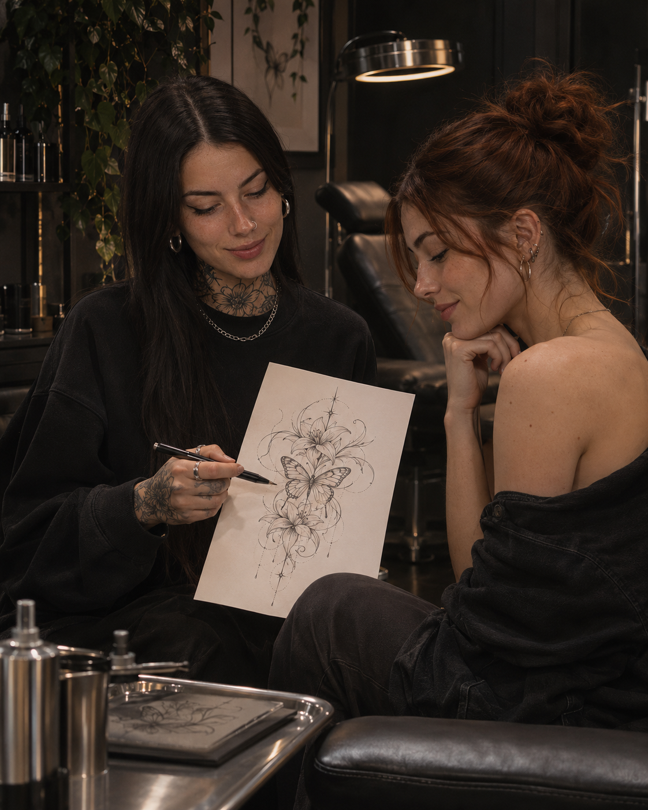
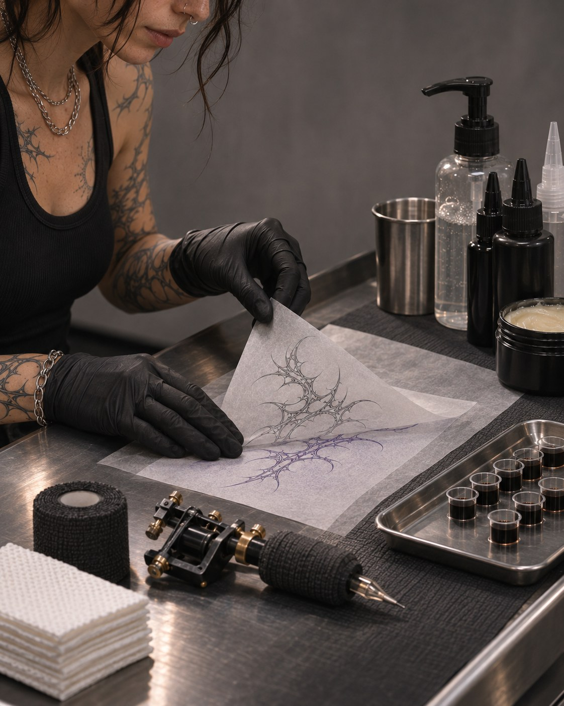
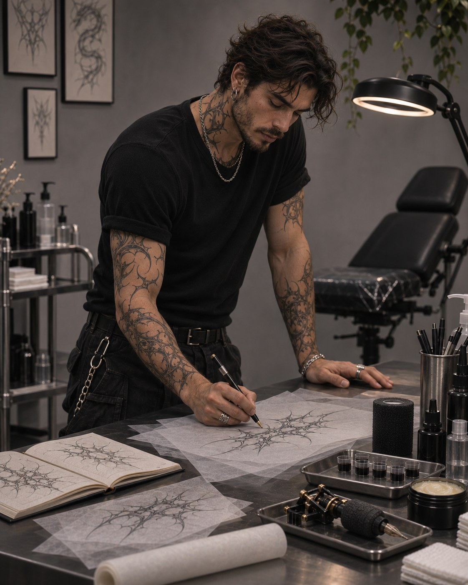
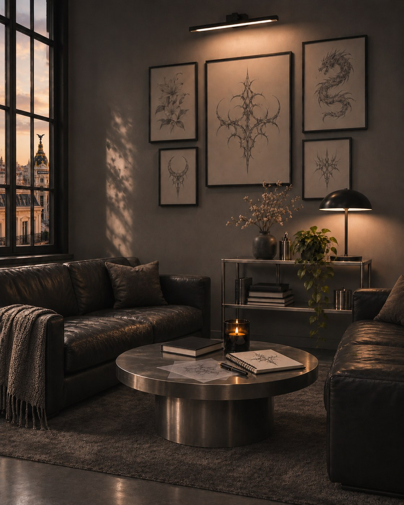
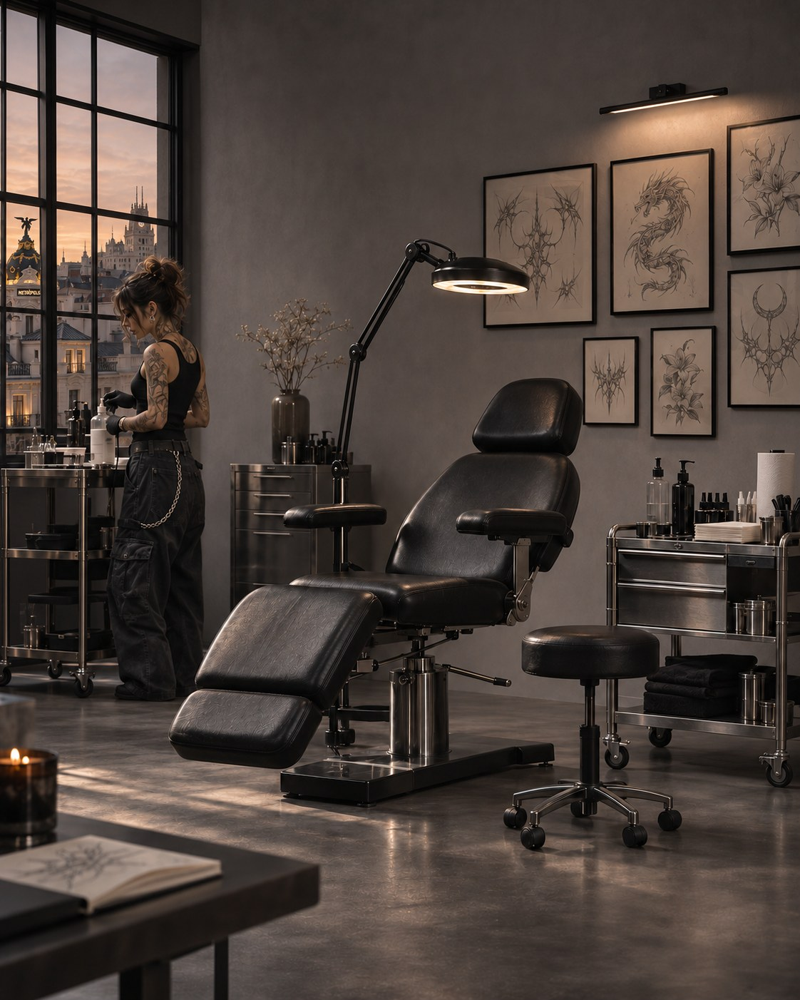
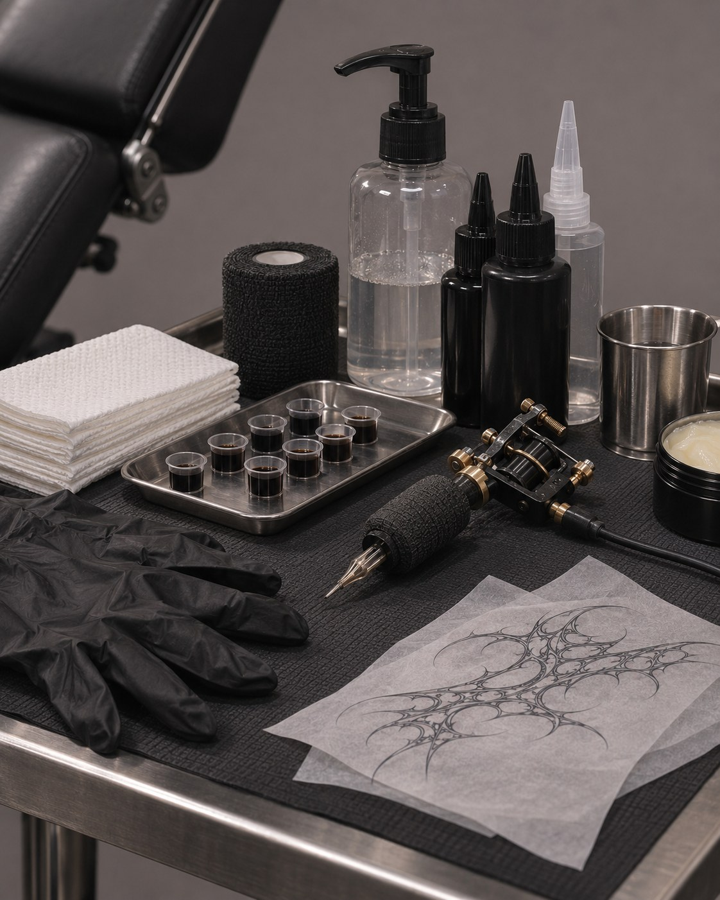

01 · CONSULTA
LA IDEA
La artista y la clienta revisan juntas el diseño floral con mariposa.
Tatuajes con intención. Diseños personales, líneas precisas y una estética que habla por ti. Tu piel. Tu historia.
Una idea, un impulso o simplemente porque te gusta. Tú decides qué llevar en la piel; nosotros lo hacemos realidad.
CONOCE A LOS ARTISTAS ↗
Un espacio de diseño, preparación y precisión. Así son las distintas zonas y momentos que dan forma al universo NOCTURNA.





Superficies limpias, material preparado y flujo de trabajo controlado.
Escuchamos tu idea, definimos estilo y ajustamos escala y ubicación.
Una atmósfera tranquila para que la sesión se sienta clara y personal.
Cuéntanos qué quieres tatuarte y cuándo te vendría bien. Te ayudaremos a dar el siguiente paso.
Explora los trabajos, busca por estilo y amplía las fotografías para descubrir cada detalle.
No hay trabajos que coincidan. Prueba otra búsqueda o pulsa «Limpiar filtros».
Tres perfiles creativos, distintas especialidades y una misma obsesión: el detalle.
Formas sólidas, contrastes fuertes y composición personalizada.
Líneas delicadas, símbolos y pequeños detalles significativos.
Retratos, composiciones figurativas y detalles de alto contraste.